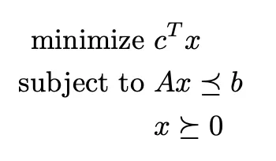
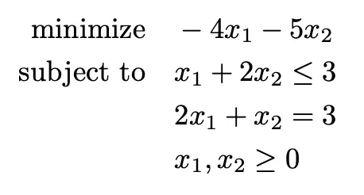
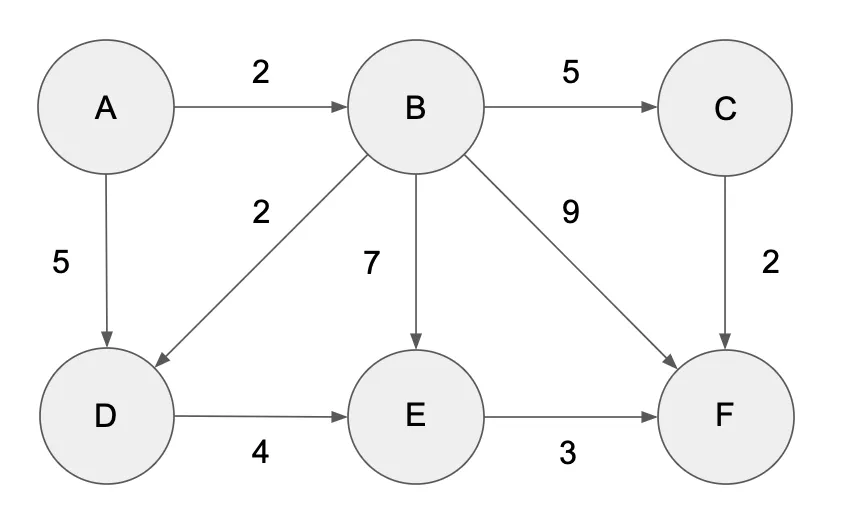

Convex Linear Optimization Using CVXPY
"...in fact, the great watershed in optimization isn't between linearity and nonlinearity, but convexity and nonconvexity."
- R. Tyrrell Rockafellar
CVXPY is a library in Python that contains a set of classes and functions designed for solving convex optimization problems. There are many different convex optimization problems we can solve using CVXPY, but today we are going to look at linear convex optimization problems.
Getting started
A linear convex optimization problem (sometimes called linear programming) is a linear constrained optimization problem. This means that the problem can be stated in a way similar to
CVXPY accepts $\leq$, $\geq$, and $=$ in its constraints as long as the equations satisfy the convexity requirements. In our CVXPY problems, CVXPY accepts NumPy arrays and SciPy sparse matrices as constraints, but the variable x must be a CVXPY Variable.
Simple Example
Let's do a simple example to see how this works. Consider the following problem:
How would we represent this using CVXPY? Here is the code to represent this problem. I will present the code and then break down each line.
# Import necessary libraries
import cvxpy as cp
# Initialize the variables
x1, x2 = cp.Variable(nonneg=True), cp.Variable(nonneg=True)
# Create objective function
objective = cp.Minimize(-4*x1 - 5*x2)
# Initialize constraints (must be a list)
constraints = [x1 + 2*x2 <= 3,
2*x1 + x2 == 3]
# Create our problem
problem = cp.Problem(objective, constraints)
# Solve our problem
problem.solve()
# Find out what the optimal values of x1 and x2 are, and what the answer
# our optimization problem is
print(problem.value)
print(x1.value, x2.value)
There are more optimal ways to do the code above, and we will go over those potential improvements. Now, let's break down each line.
First, we initialize the variables.
# Initialize the variables
x1, x2 = cp.Variable(nonneg=True), cp.Variable(nonneg=True)
Here we create the CVXPY Variables x1 and x2. These are the variables we use to solve our problem. From our optimization constraints, we learn that both x1 and x2 must be greater than or equal to 0. So, by adding nonneg=True into the cp.Variable() declaration, CVXPY knows that these variables must be greater than or equal to 0. You could omit this function argument and instead put x1 >= 0, x2 >= 0 in the constraints list. Either way works. If, in your optimization problem, the variables x1 and x2 can take on negative values, then omit nonneg=True and do not include anything in your constraints list.
Next, we create our objective function.
# Create objective function
objective = cp.Minimize(-4*x1 - 5*x2)
Creating the objective function in CVXPY is simple. If you wish to minimize your objective function, simply do cp.Minimize() with the problem inside the function--using the CVXPY variables you have already declared. If your problem involves maximization, simply do cp.Maximize() with the problem inside the function—again, using the CVXPY variables you have already declared.
Moving on, we have our constraints.
# Initialize constraints (must be a list)
constraints = [x1 + 2*x2 <= 3,
2*x1 + x2 == 3]
The very first thing to mention is that our constraints must be in list form! CVXPY will not work otherwise. Even if you have only one constraint, that single constraint must be in a list. Otherwise, creating our constraints is simply encoding our constraints in Python!
Now we create our problem.
# Create our problem
problem = cp.Problem(objective, constraints)
With this step, use cp.Problem() and put in the objective of the convex problem as the first argument, and the constraints as the second argument. Of course, if you desired, you could skip the steps of defining the objective function and constraints and do all of this inside cp.Problem().
Once we have our problem created, we solve our problem!
# Solve our problem
problem.solve()
I feel that this step is self-explanatory. Just type the above!
That is it! If you find the run the code, you get:
problem.value -> -8.999999999850528
x1.value -> 1.
x2.value -> 1.
And it is that easy! Now, let's do it with a different, more difficult example.
More Difficult Example
Consider the following network:

If we represent the edges between the nodes and their associated weights, we have:
From To Weight
A B 2
A D 5
B C 5
B D 2
B E 7
B F 9
C F 2
D E 4
E F 3
Assume that the supply (or demand, depending on the sign) at the nodes is
bA = 10, bB = 1, bC = -2, bD = -3, bE = 4, bF = -10
and that the capacity of each edge is bounded by 6. Using this information, we can build a linear optimization problem whose solution we can find using CVXPY and will tell us the cheapest flow in this network with the above constraints. The first thing we need to do is build our linear optimization problem.
We know that we want to find the most efficient way to distribute our supplies. There are 9 different routes to take (represented in the 9 different from-to pairs above), so we know that we will need 9 CVXPY variables (or, rather, one variable with 9 spots). If A is the matrix that represented the edges connecting different nodes, x is the vector representing the values we are trying to find, b represents the supply/demand of the nodes, and cost represents the weight of the edges in the from-to pairs above, we can structure our linear optimization problem as follows:
In Python (and using NumPy), we can represent these variables as:
import numpy as np
# How much it costs to go around the edges of our network
# (the weight of each edge)
cost = np.array([2, 5, 5, 2, 7, 9, 2, 4, 3])
# Our matrix, representing the connections between the nodes.
# 1 for an edge going from the node, -1 for an edge going into the node.
# The rows represent the nodes, and the columns represent the connections
# associated with that node.
# So row 0 is node A, row 1 is node B, etc, and column 0 is the connection
# from A to B, column 1 is the connection from A to D, etc.
A = np.array([[ 1, 1, 0, 0, 0, 0, 0, 0, 0],
[-1, 0, 1, 1, 1, 1, 0, 0, 0],
[ 0, 0, -1, 0, 0, 0, 1, 0, 0],
[ 0, -1, 0, -1, 0, 0, 0, 1, 0],
[ 0, 0, 0, 0, -1, 0, 0, -1, 1],
[ 0, 0, 0, 0, 0, -1, -1, 0, -1]])
# Our b vector, which contains the information for bA to bF as seen above.
b = np.array([10, 1, -2, -3, 4, -10])
Now, in order to represent x, we will need to initialize a CVXPY variable.
# Instead of initializing x1, x2, ..., x9, we can instead initialize
# x to be a vector with 9 entries.
x = cp.Variable((9), nonneg=True)
Now that we have all of our variables ready and declared, we need to create our objective function,
# Similiar to NumPy, represent matrix multiplication in CVXPY with @
objective = cp.Minimize(cost.T@x)
and our constraints
# Remember: Constraints must be in list form!
# Additionally, since we said in the creation of the x-variable that
# it must be non-negative, the only constraint we need to include is that
# each value of x cannot be greater than 6.
constraints = [A@x == b,
x <= 6]
With our variables, objective function, and constraints all defined, it is time to solve our convex linear optimization problem using CVXPY! Try to do it on your own before looking at the provided code.
import cvxpy as cp
import numpy as np
# How much it costs to go around the edges of our network
# (the weight of each edge)
cost = np.array([2, 5, 5, 2, 7, 9, 2, 4, 3])
# Our matrix, representing the connections between the nodes.
# 1 for an edge going from the node, -1 for an edge going into the node.
# The rows represent the nodes, and the columns represent the connections
# associated with that node.
# So row 0 is node A, row 1 is node B, etc, and column 0 is the connection
# from A to B, column 1 is the connection from A to D, etc.
A = np.array([[ 1, 1, 0, 0, 0, 0, 0, 0, 0],
[-1, 0, 1, 1, 1, 1, 0, 0, 0],
[ 0, 0, -1, 0, 0, 0, 1, 0, 0],
[ 0, -1, 0, -1, 0, 0, 0, 1, 0],
[ 0, 0, 0, 0, -1, 0, 0, -1, 1],
[ 0, 0, 0, 0, 0, -1, -1, 0, -1]])
# Our b vector, which contains the information for bA to bF as seen above.
b = np.array([10, 1, -2, -3, 4, -10])
# Instead of initializing x1, x2, ..., x9, we can instead initialize
# x to be a vector with 9 entries.
x = cp.Variable((9), nonneg=True)
# Similiar to NumPy, represent matrix multiplication in CVXPY with @
objective = cp.Minimize(cost.T@x)
# Remember: Constraints must be in list form!
# Additionally, since we said in the creation of the x-variable that
# it must be non-negative, the only constraint we need to include is that
# each value of x cannot be greater than 6.
constraints = [A@x == b,
x <= 6]
# Create and solve our convex linear optimization problem.
problem = cp.Problem(objective, constraints)
problem.solve()
# See what our solution is:
print(problem.value)
print(x.value)
The solution is:
problem.value -> 98.00000002103977
x.value -> [5.99999999 4.00000001 6. 0.31411362 0.00000001 0.68588636 4. 1.31411363 5.31411364]
# After rounding...
x.value -> [6, 4, 6, 0, 0, 1, 4, 1, 5]
Conclusion
And there you have it! CVXPY is a great library that makes solving convex optimization problems a breeze! You can solve more than linear optimization problems, so keep searching to learn more!
Additional Resources
If you are interested in some additional resources, I would recommend the book "Convex Optimization" by Stephen Boyd and Lieven Vandenberghe. It is a great, indepth look into the world of convex optimization, both linear and nonlinear.
The book has lots of practice problems to try out, and even has a solution manual. (If you are looking for a free pdf copy, you can find it here.